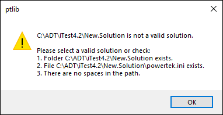
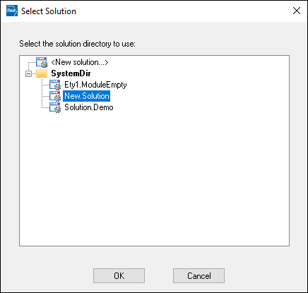
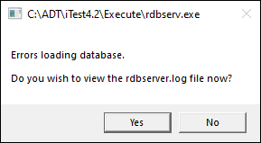
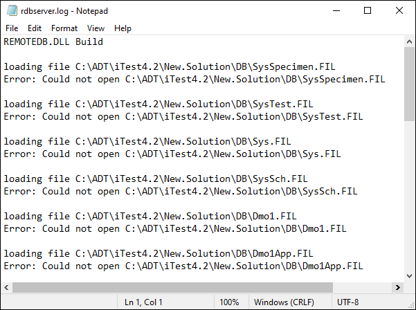

iTest User's Guide
In order for a solution to appear in the Select Solution dialog upon startup, the solution folder must have the following items:
\ / : * ? < > |).If a solution folder does not adhere to the above requirements, the following error message displays:
Invalid Solution Message

Once a solution folder adheres to the above requirements, then the solution appears in the Select Solution dialog.
Select New Solution

Additional files may be required to successfully open the solution. If a solution is lacking the necessary files to open, then the following dialog displays. Click Yes to view the rdbserver.log file in order to determine which files you may need.
Error Message

View rdbserver.log

For more information about the solution folder structure, refer to iTest Solution Folder Structure.